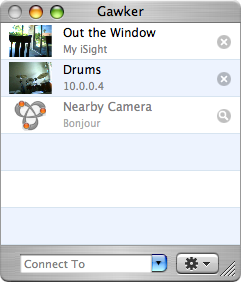
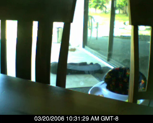
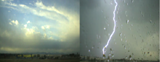

Get Gawking
Gawker allows you to create time-lapse movies using your iSight/DV/web camera.
Gawker Basics. |
|
|  |
Read this to get familiar with how to use Gawker! |
Record a movie. |
|
|  |
Recording a movie using Gawker is quick and easy. This guide will show you how to get started! |
Options for your camera. |
|
 |
Gawker allows you to set options on your camera like its description as well as setup when to start and stop recording. Schedule your camera to timelapse the sunrise while you sleep! |
Share your camera. |
|
|
Gawker can share the images from your camera over the internet, allowing others with Gawker to record a movie from your camera. Use Gawker to watch after your house while on vacation, or to allow others to watch what's happening on your street! |
|
Combine cameras. |
|
|  |
Gawker can combine cameras to create side-by-side time-lapse movies. Combine your friend's camera with your own, or connect to two cameras on the internet and record them side-by-side! Use Gawker to show the sun setting in one part of the world while it rises in another! |